寄人篱下的日子
一直以来受传统影响，我们的web工程总是打成war包，然后放入tomcat的webapps目录下面。
如下图01：
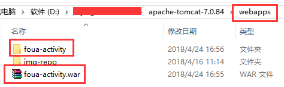
当tomcat启动时，会去解压war包，然后运行web工程。这大家都非常熟悉了。
用一个抽象的图形表示，就是这样子。如下图02：
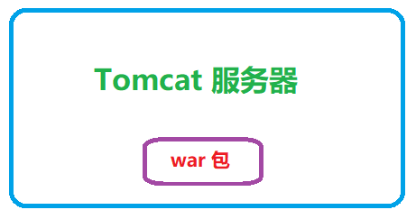
在一个大大的tomcat里面，有一个小小的war包，貌似没有地位啊。
不知道有没有人思考过这两个问题：
1）Spring在哪里？
2）tomcat和war包是如何联系上的呢？
对于第一个问题，因为我们的web工程是使用spring-web开发的，所以Spring在war包里呢。
Spring蜷缩在小小的war包里，生活在tomcat的屋檐下，完全一副威风不起来样子。
这简直是叔可忍，婶也不能忍啊。
对于第二个问题，tomcat和war包在代码上没啥关系。它们其实是通过Java Web的规范联系上的。
这个规范是这样的，在某一个jar包的META-INF目录下，必须要有一个services目录。
在这个目录下必须有一个以javax.servlet.ServletContainerInitializer为名字的文件。
显然这个文件名称是一个接口，所以文件内容就是这个接口的实现类。
拿Spring来说，这个任务自然就落在了spring-web-xxx.jar这个jar包里啦。
如下图03：
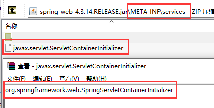
因此，tomcat会扫描web工程里的所有jar包，找到这个文件并读出里面的接口实现类，然后去调用这个实现类。
这样一来，启动流程从tomcat沿着这个实现类就来到了web工程里面了，web工程自然就被启动起来了。
对于Spring来说，这个实现类一定是由spring-web来提供了，如下图04：
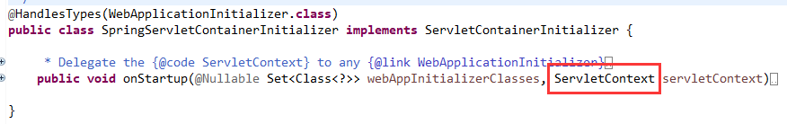
可以看到Spring唯一能访问的就是ServletContext，因此Spring的整个容器就是在ServletContext里面放着呢。
这就是传统的spring-web工程与tomcat的关系。
Spring就一活脱脱的小弟，被埋在tomcat里面，它不甘心啊。
Spring一心想成为大老虎，无奈只能被当作Hello Kitty，宝宝心里苦啊。
翻过身来成主人
Spring一直努力着、等待着、寻找着、观察着，终于机会来了。
它就是SpringBoot，是它让Spring翻身成了主人，是它让Spring百尺竿头更进一步，掌声响起来。
现在可以用下面这个图形表示，如下图05：
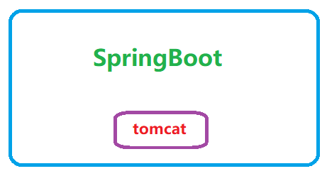
成功实现了“权力反转”，SpringBoot成了老大，把tomcat纳入了麾下。
有时候不得不感慨，真是一念之间，地狱天堂啊。
除此之外，其实SpringBoot更进了一步，它干脆一统了web服务器。
也就是说，它那天看tomcat不爽了，分分钟换成jetty或netty。
原来它只有一席之地，现在却拥有了星辰大海。不要太爽了。
当然，为此呢，它需要付出一些额外劳动，不过这个买卖依然非常划算。
因为以有限的代价，换来了无限的可能。现在它就是启动入口，它想怎么折腾都行。
不得不说，当大哥的感觉真好，如果再有个大嫂，那就更好了，哈哈。
SpringBoot统一web可能还有一个原因，就是要支持响应式web，这样整体看起来更加对称。
抽象几个接口，认真封装一下
实现统一web服务器方案其实就是，抽象几个接口，认真封装一下。真是这样的。
首先，得有个web服务器接口吧，如下图06：
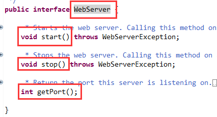
一般的人看到这个接口，心中想的是这个接口好简单啊。
二般的人看到这个接口，心中想的是这个接口抽象程度很高啊，说明它的不同实现之间差异化一定很大。
因为抽象程度低的话，不足以抽象出共性，不足以抹平差异化。
所以接口就是它的不同实现类之间的交集，差异化越大的，它们之间的交集就越小。
看下这个接口的不同实现类，如下图07：
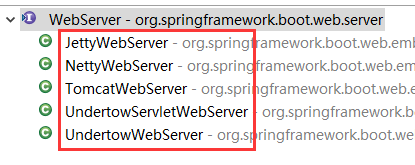
其实就是基于已有的不同web服务器的封装。不同的web服务器，是不同的团队设计开发的，几乎没有什么共性。
但总归都要启动和停止，都要有个端口吧。所以这个接口就是它现在这样子。
差异化很大的东西，它们的创建过程也一定有较大的差异化，此时一般使用工厂去创建，如下图0809：
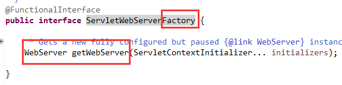
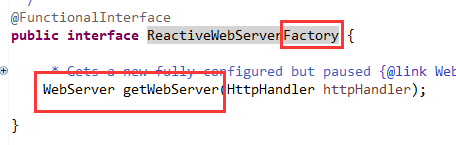
一个是创建基于Servlet的web服务器，一个是创建基于响应式的web服务器。
这样就实现不同的工厂，来创建不同的web服务器即可。如下图1011：
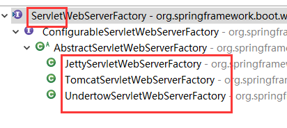
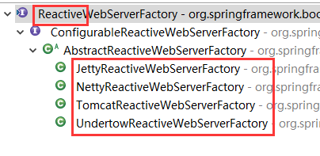
我们可以看到netty这个web服务器是不支持Servlet的，只支持Reactive。
这就是整个的抽象思路和实现过程，原理很简单，但是实现起来要足够的专业。
就像造车一样，造好了就是汽车，造不好就是拖拉机，虽然都能开，但是一个天上一个地下。
音乐渐起，华灯初上
从一开始spring-web和tomcat靠一个Java Web的规范连在一起。处于非常被动的地位。
到SpringBoot出现带来的成功翻身，把自己变成了启动入口，变成了主体。
不仅可以操作web服务器API，而且还统一了它们。从被动变成了主动地位。
SpringBoot把握住了入口，这就为它开辟了更为广阔的天地，可以放心去追求诗和远方了。
音乐渐起，华灯初上，一切美好才刚刚开始。。。
>>> 玩转SpringBoot系列文章 <<<
【玩转SpringBoot】用好条件相关注解，开启自动配置之门
【玩转SpringBoot】看似复杂的Environment其实很简单
>>> 品Spring系列文章 <<<
品Spring：SpringBoot和Spring到底有没有本质的不同？
品Spring：SpringBoot轻松取胜bean定义注册的“第一阶段”
品Spring：SpringBoot发起bean定义注册的“二次攻坚战”
品Spring：注解之王@Configuration和它的一众“小弟们”
品Spring：对@PostConstruct和@PreDestroy注解的处理方法
品Spring：对@Autowired和@Value注解的处理方法
品Spring：真没想到，三十步才能完成一个bean实例的创建
品Spring：关于@Scheduled定时任务的思考与探索，结果尴尬了
>>> 热门文章集锦 <<<
爸爸又给Spring MVC生了个弟弟叫Spring WebFlux
【面试】吃透了这些Redis知识点，面试官一定觉得你很NB（干货 | 建议珍藏）
【面试】如果你这样回答“什么是线程安全”，面试官都会对你刮目相看（建议珍藏）
【面试】迄今为止把同步/异步/阻塞/非阻塞/BIO/NIO/AIO讲的这么清楚的好文章（快快珍藏）
【面试】一篇文章帮你彻底搞清楚“I/O多路复用”和“异步I/O”的前世今生（深度好文，建议珍藏）
作者是工作超过10年的码农，现在任架构师。喜欢研究技术，崇尚简单快乐。追求以通俗易懂的语言解说技术，希望所有的读者都能看懂并记住。下面是公众号的二维码，欢迎关注！